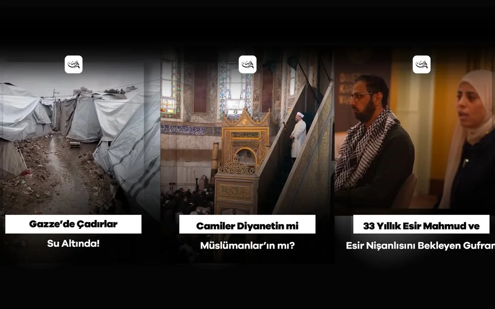
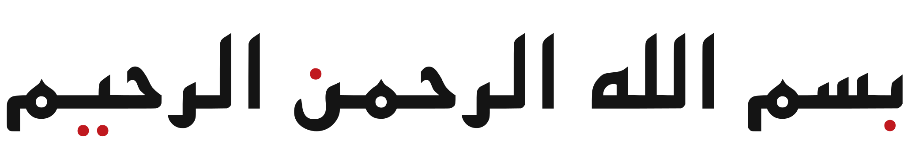
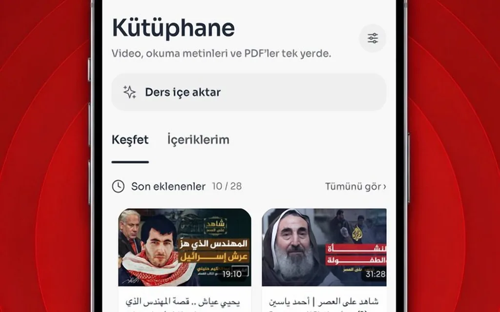
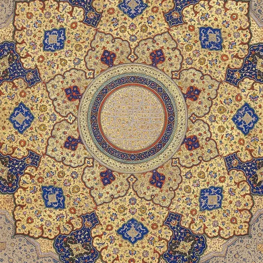
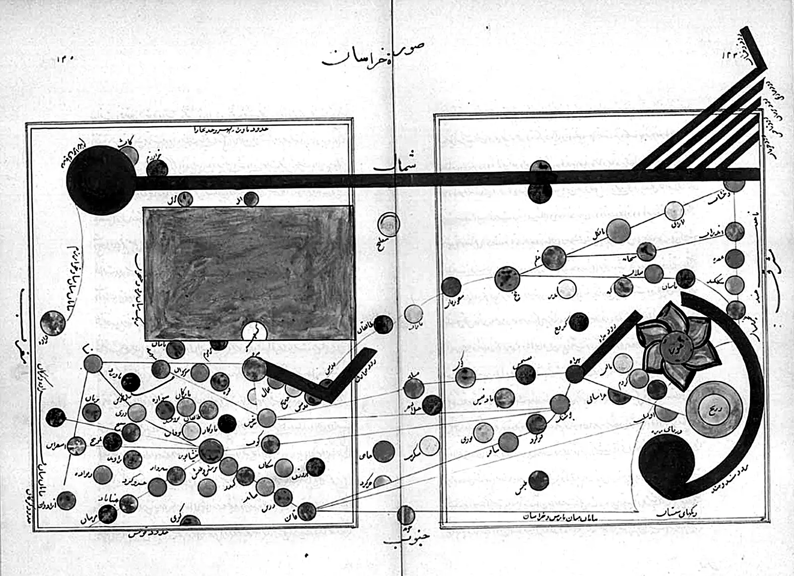
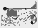
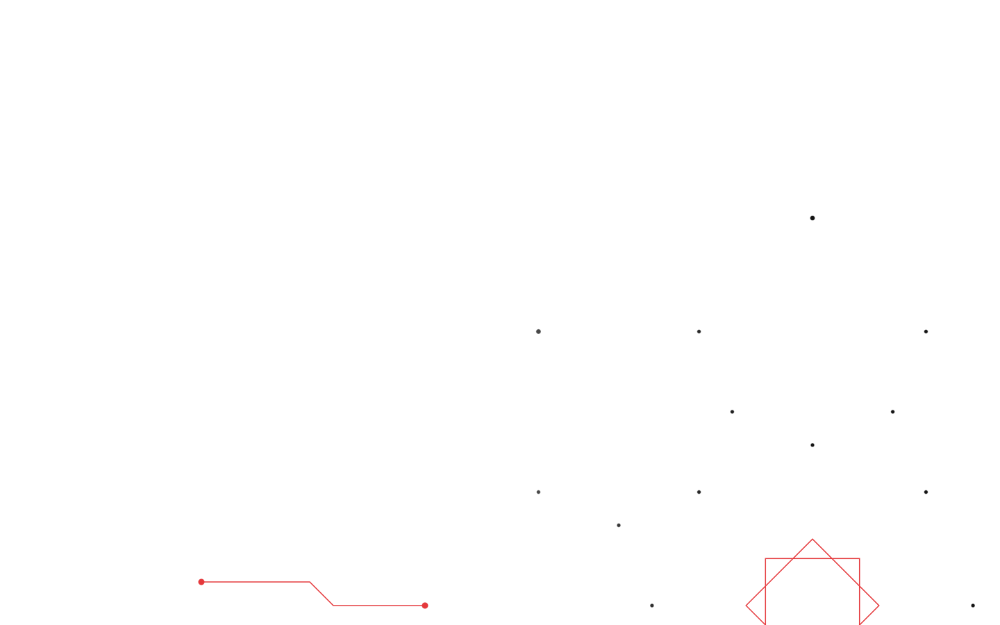
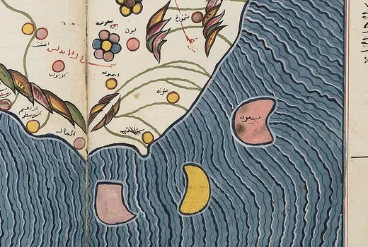

Anti-siyonist internet medyası: haber, düşünce ve tercüme.
- Haber
- Düşünce
- Tercüme

01Bir Anti-Siyonizm Kongresi projesidir
Kongre'nin 8 çalışma grubu ihtiyacını kuluçkaya yazar; ekibin, sorunu en iyi bilenlerle çalışır. Yazılım şart değil; hukuktan sanata her alandan proje başvurur.
Mümin, mümin için parçaları birbirini destekleyen bir bina gibidir.
Hadis-i şerif Buhârî 6026 · Müslim 2585
Mümin, mümin için parçaları birbirini destekleyen bir bina gibidir.
Hadis-i şerif Buhârî 6026 · Müslim 2585
02Projeler
On projeden beşi yayında, ikisi yapımda, üçü ekibini bekliyor.

Anti-siyonist internet medyası: haber, düşünce ve tercüme.

Direnişin şehitlerinden ve Filistinlilerden Arapça öğren.

Boykot listesindeki ürünleri satmayan işletmelerin haritası.

03Destek
Destek her projeye aynı şekilde verilir. Fikir aşamasındaki projeler de başvurabilir.
Alanını bilen bir mentorla düzenli görüşürsün; tıkandığın yerde ona yazarsın.
Projene geliştirici, tasarımcı, araştırmacı ve çevirmen bulunur.
İhtiyacı yazan çalışma grubu, projeyi baştan sona ekiple birlikte sınar.
Projen, proje dizininde kendi kartı ve bağlantılarıyla yer alır.



Kuluçka projeden hisse, patent, reklam ve kullanıcı verisi istemez. Üretilen iş, onu üretenlerindir; ticari olabilir, para kazanabilir.
İş onu üretenlerindir; lisansı ekip seçer, kuluçka hisse ya da pay almaz.
İş reklam göstermez, izleme kodu taşımaz, kullanıcı verisi satmaz.
Bir platform kaldırsa bile iş başka yoldan ulaşılabilir kalır.
Her proje bir çalışma grubunun ihtiyacından doğar; grup işi yayından önce sınar.

05Hackathon
Çok temalı anti-siyonist fikir ve proje üretim yarışması: tıp, hukuk, medya ve yazılımdan takımlar iki günde fikrini çalışan bir örneğe çevirir. İlk hackathon Sakarya'da.
Hackathon sayfasını aç
Sabah açılış konferansı. Öğleden sonra temalar tanıtılır, takımlar kurulur ve yapım başlar.
Teknik ve alan mentorları takımları dolaşır. Gece çalışması isteğe bağlıdır.
Dört dakika sunum, iki dakika soru. Tek jüri dört ölçütle değerlendirir; gün ödül töreniyle kapanır.